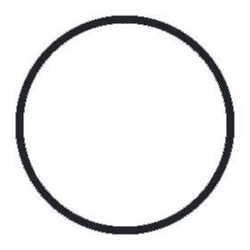

Shadow Tablet, Cairn - Assault the town
Shadow Tablet, Cairn - Abandon Friendly Arm Inn
Flute, Dawn - Appoint champion Cloak
Memory of Sehanine, Tower and Baldur's - Kidnap Torlin
Valars collecting adventurers for this
Memory of Sehanine, Tower and Baldur's - Poison area
Memory of Sehanine, Tower and Baldur's - Show dominance
Valars on the way here